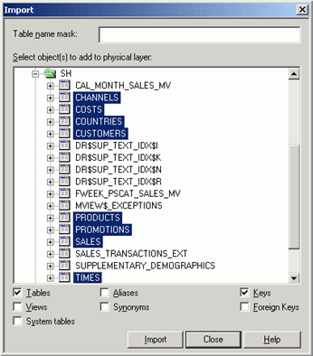

электронный
ресурс по учебной дисциплине 1-58 01 01 - "ИНЖЕНЕРНО-ПСИХОЛОГИЧЕСКОЕ ОБЕСПЕЧЕНИЕ ИНФОРМАЦИОННЫХ ТЕХНОЛОГИЙ".
|
||
| Оглавление | Программа | Теория | Практика| Контроль знаний | Об авторах | ||
|
Оглавление
Лабораторная работа 11 Создание репозитория в Oracle BI Administrative Tools. Построение физического уровня и бизнес модели. 1. Цель работы Формирование практических умений по созданию репозитория в Oracle BI Administrative Tools. А также получение навыков работы с физическим уровнем и бизнес моделью репозитория. 2. Учебный материал по лабораторной 1. Создание нового репозитория Нажмите Пуск > Programs > Oracle Business Intelligince > Administration, чтобы открыть Oracle BI Administrative Tools Нажмите File > New, чтобы открыть диалоговое окно New Repository В диалоговом окне New Repository введите имя нового репозитория «SH.rpd» Нажмите Save. Откроется новый репозиторий. Окно Administrative Tools состоит из трех частей: презентационный уровень Presentation, уровень бизнес модели Business Model and Mapping и физический уровень Physical. Если необходимо, нажмите Tools > Options > Show toolbar, чтобы открыть панель инструментов. 2. Импорт Схемы SH Schema Чтобы импортировать схему SH Schema в репозиторий, проделайте следующие шаги: 1. В окне Oracle BI Administration Tool нажмите File > Import > from Database . . . 2. В диалоговом окне Select Data Source выделите ODBC DSN, который вы создали в предыдущей лабораторной работе, введите SH в поле User Name и Password, и нажмите OK, чтобы открыть диалоговое окно Import. 3. В диалоговом окне Import нажмите на папку SH. 4. Нажмите на значок «+» около папки SH, чтобы посмотреть подпункты. Используя Ctrl + клик Ctrl + клик выделите следующие пункты: CHANNELS, COSTS, COUNTRIES, CUSTOMERS, PRODUCTS, PROMOTIONS, SALES, TIMES PROMOTIONS, SALES, TIMES  5. Обратите внимание, Tables и Keys должны быть помечены галочкой. Нажмите кнопку Import. Откроется диалоговое окно Connection Pool. Обычно импортируют только те объекты, которые будут использоваться в бизнес модели. Однако, не волнуйтесь, если Вы скопировали лишнее, потом Вы всегда сможете удалить ненужные объекты. 6. В диалоговом окне Connection Pool в закладке General убедитесь, что в поле Call interface введено значение Default (OCI 10g), в поле Data source name введите ORCL. Заметьте, что это имя сервиса TNS, а не ODBC DSN. 7. Остальные поля оставьте без изменения и нажмите OK, чтобы закрыть диалоговое окно Connection Pool. Импортирование началось. 8. Когда импортирование закончится, нажмите Close, чтобы закрыть диалоговое окно Import. 9. В окне физического уровня Physical раскройте папку SH, нажав значок "+" и проверьте, что импортировались нужные Вам объекты. 10. Нажмите Tools > Update All Row Counts, Tools > Update All Row Counts чтобы обновить связи. 11. Когда обновление закончится, убедитесь, что все необходимые Вам объекты находятся в окне Physical: 3. Создание Связей На Физическом Уровне 1. Нажмите кнопку New Foreign Key на панели инструментов. 2. Нажмите на объект Channels и потом на Sales. Откроется диалоговое окно Physical Foreign Key. Важен порядок выбора объектов. Создаются связи один ко многим (1:N), которые соединяют ключевой столбец в первой таблице и первичный ключ во второй. Приложение Administration Tool автоматически определяет, какие столбцы в таблицах необходимо связать. Убедитесь, что в поле Expression определена связь: CHANNELS.CHANNEL_ID = SALES.CHANNEL_ID 3. Создайте следующие связи: PROMOTIONS.PROMO_ID = SALES.PROMO_ID TIMES.TIME_ID = SALES.TIME_ID PRODUCTS.PROD_ID = SALES.PROD_ID CUSTOMERS.CUST_ID = SALES.CUST_ID COUNTRIES.COUNTRY_ID = CUSTOMERS.COUNTRY_ID Обратите внимание, что Countries связан с Customers, а Costs не связан ни с чем. Все остальные объекты связаны с Sales. 4. В окне Physical правой кнопкой мыши кликните по папке Sh и выберете Physical Diagram > Object (s) and All Joins. 5. Нажмите File > Save или кнопку Save на панели инструментов, чтобы сохранить репозиторий. 6. Нажмите No, когда будет запрос о проверке на согласованность. 4. Создание Бизнес Модел Для создания новой Бизнес Модели выполните следующие действия: 1. В Business Model and Mapping layer на белом фоне нажмите правую кнопку мыши и выберите New Business Model. 2. В диалоговом окне Business Model в поле Name напишите SH, а параметр Available for queries оставьте не выбранным. В поле Description вы можете оставить свои заметки. Сейчас оставьте его пустым 3. Нажмите OK, чтобы закрыть диалоговое окно Business Model. Новая бизнес модель SH появилась в Business Model and Mapping layer. Красный символ на значке SH показывает, что она еще не доступна для запросов. Вы сделаете ее доступной для запросов позже, когда будет определен презентационный уровень Presentation layer. 5. Создание логической таблицы Для создания Логической Таблицы выполните следующие действия: 1. В Business Model and Mapping layer наведите на SH, нажмите правую кнопку мыши и выберите New Object > Logical Table. 2. В диалоговом окне Logical Table в поле Name напишите Sales Facts.
3. Нажмите OK, чтобы закрыть диалоговое окно Logical Table. Логическая таблица Sales Facts появится в бизнес модели SH в окне Business Model and Mapping layer. Папка Sources будет заполнена позже, когда будет создан логический столбец. 6. Создание Логического Столбца Для создания Логического Столбца выполните следующие действия: 1. В поле физического уровня Physical откройте список подпунктов папки Sales, щелкнув по значку "+". 2. Выделите атрибут AMOUNT_SOLD Перетащите мышкой атрибут AMOUNT_SOLD из Physical в логический столбец Sales Facts в поле Business Model and Mapping. Новая колонка AMOUNT_SOLD добавлена в логическую таблицу Sales Facts. 3. В окне Business Model and Mapping дважды кликните по логическому столбцу AMOUNT_SOLD, откроется диалоговое окно Logical Column. 4. Перейдите на закладку Aggregation 5. В раскрывающемся списке Default aggregation rule выберете SUM. 6. Нажмите OK, чтобы закрыть диалоговое окно Logical Column. Обратите внимание, значок около логического столбца изменился. 7. Создание логических связей Для создания Логических Связей в бизнес модели выполните следующие действия: 1. Выделите следующие таблицы в окне физического уровня. Выделите только эти таблицы: CHANNELS, CUSTOMERS, PRODUCTS, PROMOTIONS, TIMES 2. Перетащите выделенные таблицы из окна Physical физического уровня в папку бизнес модели SH в окне Business Model and Mapping. После этого перенесенные таблицы автоматически будут созданы в окне Business Model and Mapping. Обратите внимание, что каждая логическая таблица имеет значок желтого цвета. В окне Business Model and Mapping так обозначаются таблицы фактов (fact table). Так как еще не созданы логические связи, все значки таблиц желтые. Цвет значков поменяется на белый после следующего шага, когда будут созданы логические связи. 3. Кликните на иконку New Complex Join на панеле инструментов. 4. Сначала кликните по таблице Channels, потом по таблице Sales Facts в окне Logical Table Diagram. Порядок очень важен. Откроется диалоговое окно Logical Join. Оставьте все значения без изменений, но обратите внимание какие параметры вы можете изменять: name, business model, tables, driving table, join type, и cardinality. А также параметры, которые вы не можете изменять: join expression и the join columns. Сейчас никаких изменений вносить не надо. 5. Нажмите OK. 5.Повторите эти действия для оставшихся таблиц. 6. Кликните правой кнопкой по бизнес модели SH и выберите Business Model Diagram > Whole Diagram. В итоге вы должны получить: 7. Кликните по X в верхнем правом углу, чтобы закрыть Logical Table Diagram. Обратите внимание, что цвет значков таблиц изменился на белый. Желтым обозначаются таблицы фактов (fact table), а белым таблицы измерений (dimension table). Перед определением связей между таблицами, решите, какие из них являются таблицами измерений, а какие фактическими таблицами. Получилась схема «звезда», которая состоит из логической таблицы фактов Sales Facts и пяти логических таблиц измерений: Channels, Customers, Products, Promotions, and Times. 8. Сохраните репозиторий SH. Не проводите проверку непротиворечивости. 8. Удаление ненужных столбцов Чтобы удалить ненужные столбцы выполните следующие действия: 1. В таблицы Channels в окне Business Model and Mapping используя Ctrl + клик выделите Channel Class ID и Channel Total ID. 2. Нажмите Delete на своей клавиатуре. Нажмите Yes для подтверждения удаления. 3. Убедитесь, что логическая таблица Channels теперь содержит только 4 логических столбца. 4. Убедитесь, что таблица Customers содержит только следующие столбцы: 5. Убедитесь, что таблица Products содержит только следующие столбцы: 6. Убедитесь, что таблица Promotions содержит только следующие столбцы: 7. Убедитесь, что таблица Times содержит только следующие столбцы: 3. Порядок выполнения работы 1. Ознакомиться с учебным материалом 2. Создать новый репозиторий 3. Импортировать схему SH Schema 4. Создать связи на физическом уровне 5. Создать бизнес модель 6. Создать все логические таблицы и колонки 7. Создать логические связи между таблицами 8. Удалить ненужные столбцы с бизнес модели 9. Согласовать с преподавателем содержание отчёта и подготовить его.
|
| (С) БГУИР |